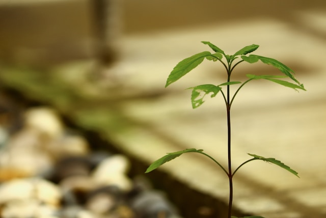

Фритрек и нулевой спринт: Подготовка к работе

Это было самое начало пути. На этом этапе важно было проникнуться основами и настроиться на учёбу. И, возможно, подумать, как новые знания могут повлиять на ваше будущее.
Я помню, как в самом начале боялся пропустить что-то важное. Казалось, что знаний слишком много, и я не успею за всеми. Но именно в этот момент я понял: главное — просто начать. Каждый маленький шаг вперёд важнее, чем ожидание идеального момента.